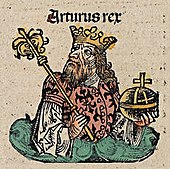

Historical Basis
The historical basis for King Arthur has long been debated by scholars. One school of thought, citing entries in the Historia Brittonum (History of the Britons) and Annales Cambriae (Welsh Annals), sees Arthur as a genuine historical figure, a Romano-British leader who fought against the invading Anglo-Saxons some time in the late 5th to early 6th century. The Historia Brittonum, a 9th-century Latin historical compilation attributed in some late manuscripts to a Welsh cleric called Nennius, contains the first datable mention of King Arthur, listing twelve battles that Arthur fought. These culminate in the Battle of Badon, where he is said to have single-handedly killed 960 men. Recent studies, however, question the reliability of the Historia Brittonum.
The other text that seems to support the case for Arthur's historical existence is the 10th-century Annales Cambriae, which also link Arthur with the Battle of Badon. The Annales date this battle to 516–518, and also mention the Battle of Camlann, in which Arthur and Medraut (Mordred) were both killed, dated to 537–539. These details have often been used to bolster confidence in the Historia's account and to confirm that Arthur really did fight at Badon. Problems have been identified, however, with using this source to support the Historia Brittonum's account. The latest research shows that the Annales Cambriae was based on a chronicle begun in the late 8th century in Wales. Additionally, the complex textual history of the Annales Cambriae precludes any certainty that the Arthurian annals were added to it even that early. They were more likely added at some point in the 10th century and may never have existed in any earlier set of annals. The Badon entry probably derived from the Historia Brittonum.
This lack of convincing early evidence is the reason many recent historians exclude Arthur from their accounts of sub-Roman Britain. In the view of historian Thomas Charles-Edwards, "at this stage of the enquiry, one can only say that there may well have been an historical Arthur [but ...] the historian can as yet say nothing of value about him". These modern admissions of ignorance are a relatively recent trend; earlier generations of historians were less sceptical. The historian John Morris made the putative reign of Arthur the organising principle of his history of sub-Roman Britain and Ireland, The Age of Arthur (1973). Even so, he found little to say about a historical Arthur.
Partly in reaction to such theories, another school of thought emerged which argued that Arthur had no historical existence at all. Morris's Age of Arthur prompted the archaeologist Nowell Myres to observe that "no figure on the borderline of history and mythology has wasted more of the historian's time". Gildas' 6th-century polemic De Excidio et Conquestu Britanniae (On the Ruin and Conquest of Britain), written within living memory of Badon, mentions the battle but does not mention Arthur. Arthur is not mentioned in the Anglo-Saxon Chronicle or named in any surviving manuscript written between 400 and 820. He is absent from Bede's early-8th-century Ecclesiastical History of the English People, another major early source for post-Roman history that mentions Badon. The historian David Dumville wrote: "I think we can dispose of him [Arthur] quite briefly. He owes his place in our history books to a 'no smoke without fire' school of thought ... The fact of the matter is that there is no historical evidence about Arthur; we must reject him from our histories and, above all, from the titles of our books."
Some scholars argue that Arthur was originally a fictional hero of folklore—or even a half-forgotten Celtic deity—who became credited with real deeds in the distant past. They cite parallels with figures such as the Kentish Hengist and Horsa, who may be totemic horse-gods that later became historicised. Bede ascribed to these legendary figures a historical role in the 5th-century Anglo-Saxon conquest of eastern Britain. It is not even certain that Arthur was considered a king in the early texts. Neither the Historia nor the Annales calls him "rex": the former calls him instead "dux bellorum" (leader of battles) and "miles" (soldier).
Historical documents for the post-Roman period are scarce, so a definitive answer to the question of Arthur's historical existence is unlikely. Sites and places have been identified as "Arthurian" since the 12th century, but archaeology can confidently reveal names only through inscriptions found in secure contexts. The so-called "Arthur stone", discovered in 1998 among the ruins at Tintagel Castle in Cornwall in securely dated 6th-century contexts, created a brief stir but proved irrelevant. Other inscriptional evidence for Arthur, including the Glastonbury cross, is tainted with the suggestion of forgery.
Several historical figures have been proposed as the basis for Arthur, ranging from Lucius Artorius Castus, a Roman officer who served in Britain in the 2nd or 3rd century, to sub-Roman British rulers such as Riotamus, Ambrosius Aurelianus, Owain Ddantgwyn, and Athrwys ap Meurig. However, no convincing evidence for these identifications has emerged.